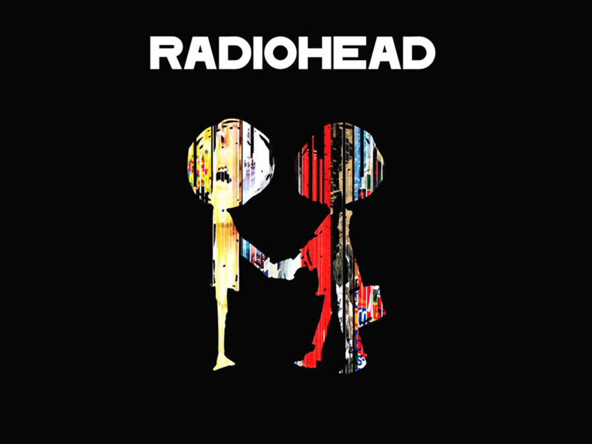
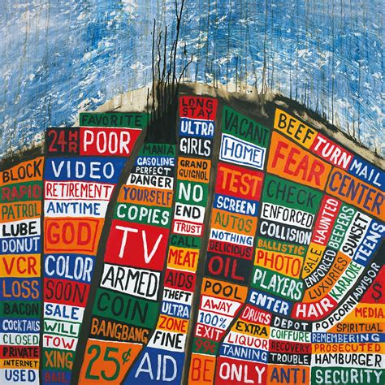
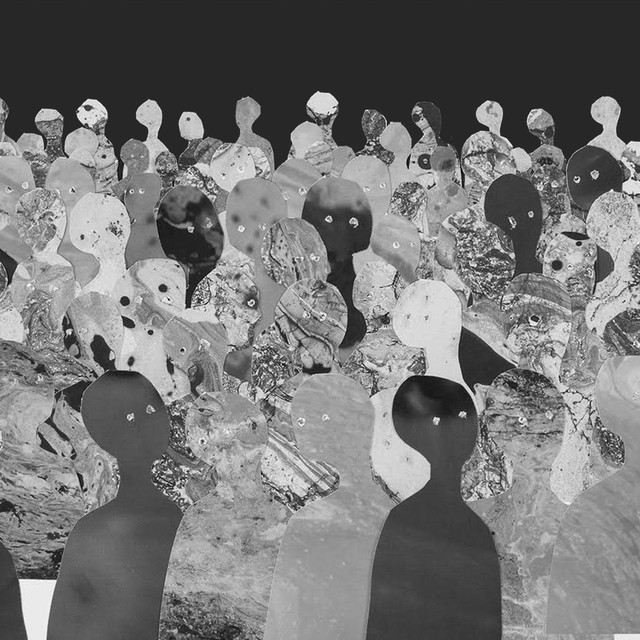
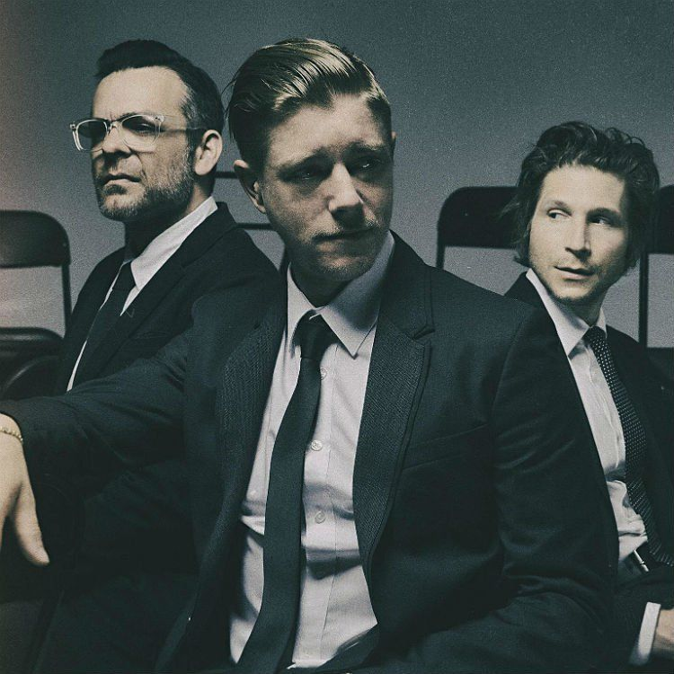
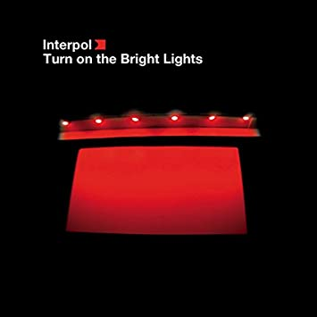
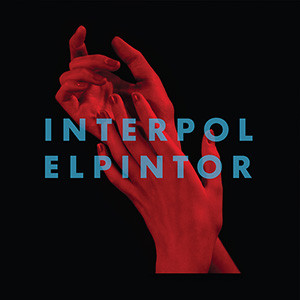
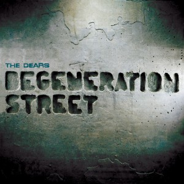
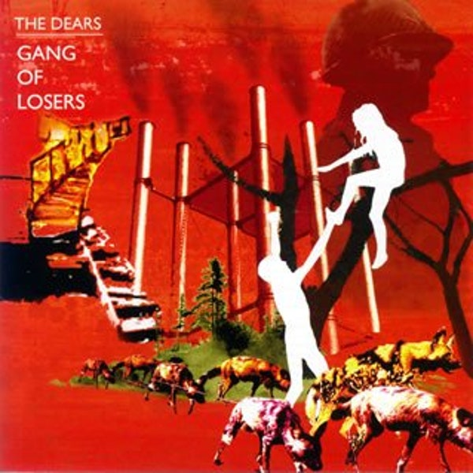
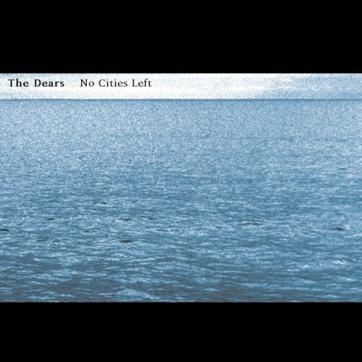

Закрыть
Галерея
Radiohead —
британская рок-группа из Оксфордшира. Группа была основана в 1985 году, и её состав с того времени не менялся.
Стиль Radiohead традиционно определяют как инди-/альтернативный рок, хотя на разных этапах звучание варьировалось от
брит-попа до арт-рока и электронной музыки.
Дебютный сингл «Creep» вышел в 1992 году и первое время оставался незамеченным, однако стал хитом после выхода
альбома Pablo Honey (1993). The Bends (1995) сделал Radiohead популярными в Великобритании, а третий альбом OK
Computer (1997), посвящённый отчуждению в обществе, принёс Radiohead мировой успех и считается одним из наиболее
значимых рок-альбомов 1990-х. В 2000 и 2001 году музыканты записали два экспериментальных альбома Kid A и Amnesiac.
После релиза Hail to the Thief истёк контракт Radiohead с мейджор-лейблом EMI, и следующий альбом In Rainbows был
выложен музыкантами для свободного скачивания в Интернет. Последний на данный момент альбом, A Moon Shaped Pool,
выпущен в 2016 году.
Radiohead оказали большое влияние на современную рок-музыку. По данным на май 2011 года, альбомы
Radiohead были проданы в количестве примерно 30 миллионов копий. Журнал Rolling Stone в 2005 году поместил
Radiohead на 73-е место в списке самых великих музыкантов в истории. Все альбомы начиная с OK Computer
и до A Moon Shaped Pool номинировались на премию Грэмми за «Лучший альтернативный альбом» (трижды Radiohead
в этой номинации победили), все альбомы получили статус золотых или платиновых в США и Великобритании.
В 2019 году группа была включена в Зал славы рок-н-ролла.
Подробнее...
 |
 |
|  |  |
Закрыть
Галерея
Interpol — американская группа, играющая в жанрах инди-рока и постпанка. Группа образовалась в 1997 году в Нью-Йорке,
большую часть существования в её состав входило четыре музыканта: Пол Бэнкс (вокал, гитара), Дэниэл Кесслер (гитара),
Карлос Денглер (бас-гитара, клавишные) и Сэм Фогарино (ударные). До прихода Сэма Фогарино в 2000 году барабанщиком в
группе выступал Грег Друди; Карлос Денглер расстался с её деятельностью в 2010 году — то есть, в настоящее время Interpol
состоит из трёх человек.
Группу Interpol часто и во многом сравнивают с такими исполнителями, как Joy Division, а также с The Strokes
и The Chameleons, а её дебютный альбом Turn on the Bright Lights, выпущенный в 2002 году, вошёл в список
«100 Лучших Альбомов 2000-х» журнала Rolling Stone. Следующие альбомы Antics (2004) и Our Love to Admire (2007)
также поддержали дальнейший успех Interpol. В 2010 году был выпущен четвёртый альбом, названный в честь самой группы.
Пятый альбом El Pintor вышел осенью 2014 года.
Подробнее...
|  | |
|  |  |
Закрыть
Галерея
The Dears — канадская инди-рок-группа, образована в 1995 году в Монреале, Квебек.
Состав группы очень часто менялся, однако главным членом команды всегда оставался её основатель
и фронтмен Murray Lightburn. Группа неоднократно выступала в абсолютно разных составах, о чем,
разумеется, сообщалось в прессе. Двое новых участников — Lisa Smith и Laura Wills из группы Pony
Up были официально заявлены как члены The Dears в сентябре 2008 года.
Группа сформировалась в 1995 году. Через 5 лет вышел их дебютный альбом — End of a
Hollywood Bedtime Story (2000). В 2001—2002 годах издаётся мини-диск Orchestral
Pop Noir Romantique and Protest вместе с коллекцией ранее неизданных песен —
Nor the Dahlias. В 2003 году группа выпускает свой второй студийный
альбом No Cities Left и дают несколько концертов, благодаря которым начинает
распространяться их международная популярность. The Dears активно гастролируют
по в поддержку альбома No Cities Left.
Затем возвращаются в студию и приступают к записи нового материала. Третий студийный
альбом группы под названием Gang of Losers увидел свет 29 августа 2006 года.
10 июля 2007 года альбом группы Gang of Losers был номинирован на Polaris Music Prize.
Подробнее...
 |
 |
|  |  |
Закрыть
Истоки: 1980-е
С первой половины 1980-х термин «инди» стал употребляться по отношению к музыке, выпускавшейся на независимых (англ. independent) постпанковых лейбла. Прообразом инди-движения в США стала так называемая колледж-сцена, представители которой пользовались популярностью на студенческих радиостанциях. Ключевыми группами направления стали R.E.M. из США и The Smiths из Великобритании.
Инди-поп
Рождение британского инди-поп-движения было ознаменовано выходом сборника C86 с участием Primal Scream, The Pastels, The Wedding Present и других, оказавшего огромное влияние на последующие поколения альтернативных рок-музыкантов и давшего название целой музыкальной сцене. Наработки The Jesus and Mary Chain и Dinosaur Jr., наравне с британским и американским инди-попом и дрим-попом (Cocteau Twins) оказали решающее влияние на гитарный стиль шугейзинг, зародившийся в середине 1980-х и названный так из-за склонности участников группы смотреть себе под ноги на педаль эффектов вместо взаимодействия с аудиторией. Шугейзинг-группы, такие, как My Bloody Valentine, Slowdive и Ride, создавали посредством активного использования гитарных эффектов громкое «плывущее» звучание, погребая мелодию под стенами дисторшна и фидбэка и гудящими, гипнотичными риффами. Другое влиятельное движение конца 1980-х — Мэдчестер, сформировавшееся вокруг субкультуры ночного клуба Haçienda, владельцами которого являлись New Order и Factory Records. Мэдчестер-группы Happy Mondays и The Stone Roses смешивали танцевальные ритмы эйсид-хауса, северного соула и фанка с мелодичным звучанием гитар.
Успех 2000-ых
В 2000-х, снижение продаж музыки на физических носителях и увеличение роли Интернета в продвижении музыки привело к тому, что целая волна новых инди-исполнителей добилась успеха. Теперь в мейнстрим входили музыкально и эмоционально более сложные группы. Данное коммерческое достижение и широкое использование термина «инди» в других формах популярной культуры, привело к тому, что инди-рок потерял своё прежнее значение. Успех групп The Strokes, The White Stripes, The Hives и The Vines в начале 2000-х способствовал увеличению количества групп, подражающих эстетике постпанка, либо гаражного рока. Большое распространение инди-групп к концу десятилетия стали называть уничижительным термином «лэндфил-инди» (англ. Landfill indie — свалка инди).
Инди-рок (от англ. independent - независимый) - обобщающий термин для широкого диапазона музыкантов и стилей, объединённых причастностью к контркультуре и имеющих отношение к рок-музыке. Изначально термин «инди» использовался для обозначения независимых музыкальных лейблов, но впоследствии стал употребляться и по отношению к музыке, выпускавшейся на этих лейблах. В 1980-х термин инди-рок был синонимом альтернативного рока и применялся для разделения исполнителей по географическому признаку: при этом альтернативный рок был предпочтительным для американских исполнителей, а инди-рок — для британских. С попаданием американских гранж- и поп-панк-исполнителей, а затем и британских брит-поп-исполнителей в мейнстрим в 1990-х, термин стал использоваться для представителей андеграунда альтернативного рока. В 2000-х годах в результате изменений в музыкальной индустрии и растущего значения Интернета инди-рок приобрёл коммерческий успех. На сегодняшний день под инди-роком подразумевается изящная, мягкая, ретроспективная музыка, без дисторшна и агрессии, а также практически не-роковые исполнители меланхоличных баллад.